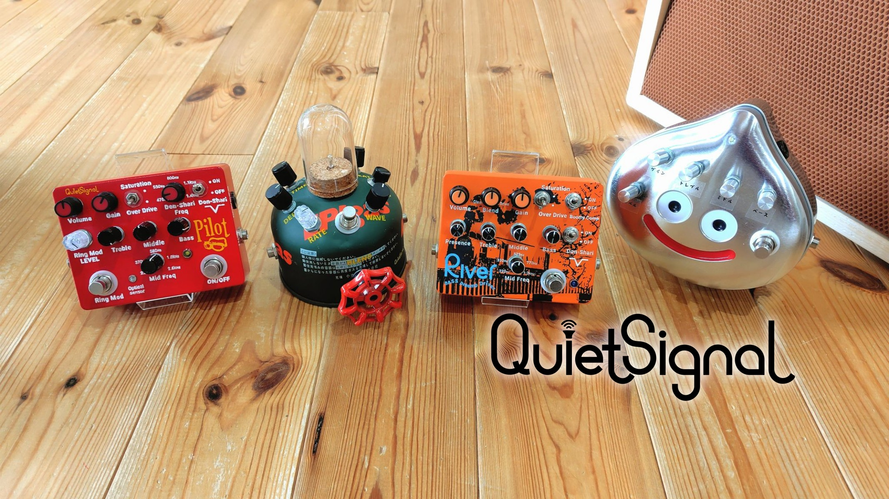

Make your Own Noise!
Handcrafted Effects — Mie, Japan
// About
Quiet Signalとは
三重県松阪市を拠点とするエフェクターブランド“Quiet Signal”は、プレイヤーが感覚的に扱いやすい操作性を目指し、個人ビルダーが回路設計、基板製作、筐体デザインを一貫して行っている。
奥大井OVERDRIVE2025エフェクターコンテストではベース用プリアンプドライバー【River】で【グランプリ】を受賞、TC楽器presents 第３回改造エフェクターコンテストではモジュレーションディレイ【GAS ECHORUS】で【ギターマガジン賞】を受賞した。
InstagramとYOUTUBEは別ページが開きます。
Quiet Signal | クワイエットシグナル ギター・ベース用ハンドメイドエフェクターの制作・販売
Handmade Guitar & Bass Effects Pedals from Japan